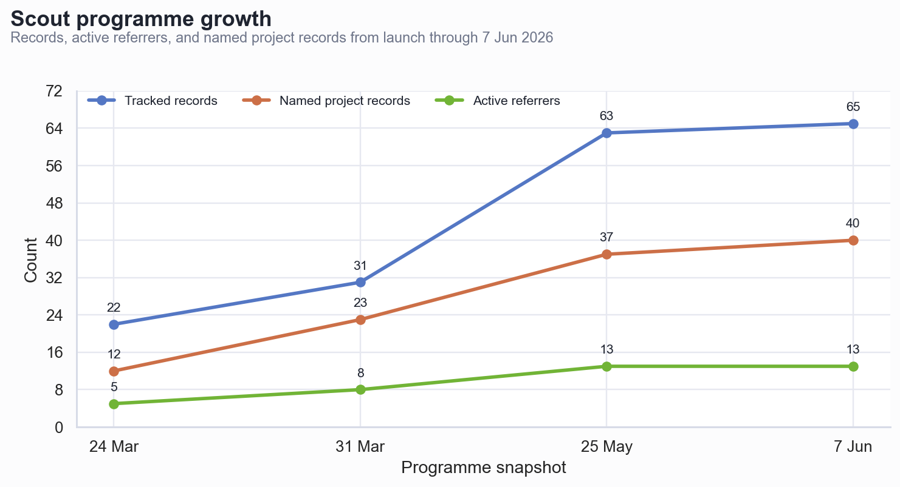
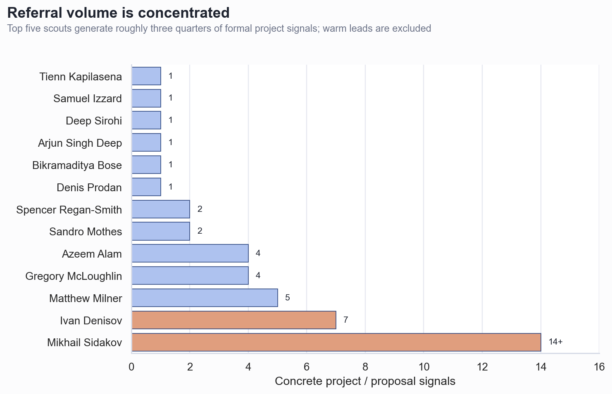
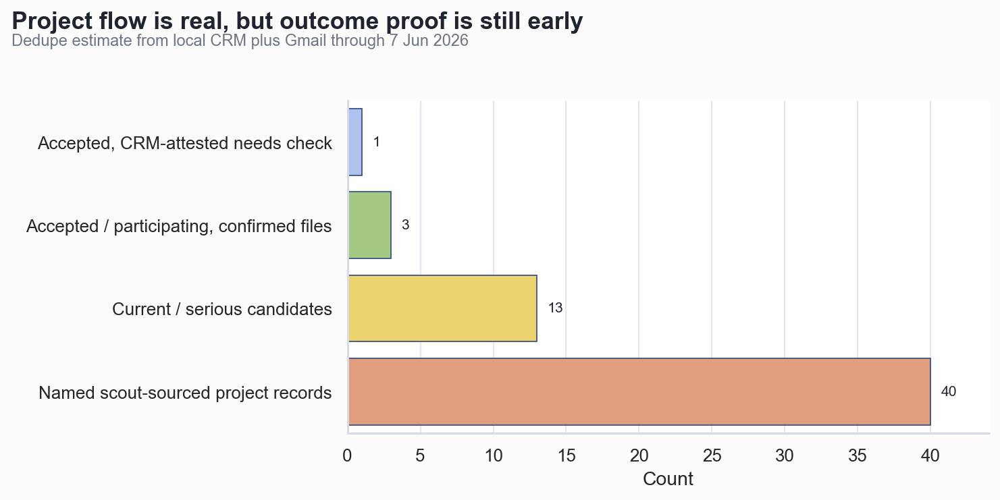

GRx Scout Programme: Current Picture and Effectiveness
Executive Summary
The scout programme is producing real deal flow, but the value is concentrated in a small set of scouts. Since the formal launch on 9 March 2026, GRx has run 10 scout intro calls, built a CRM of 63 tracked scout/scout-like records plus 2 prospects, and has 13 formal scouts with at least one concrete project signal.
Project volume is strong for a three-month-old programme. The latest dedupe estimate is 40+ named scout-sourced startup/project records, up from ~12 on 24 March and ~23 on 31 March. On a per-scout signal basis, there are about 44 formal project/proposal signals plus several warm/pre-intro leads.
Outcome proof is promising but still early. SWEN, Localie, and Steez are confirmed in cohort founder files and are tied to scout/referrer activity in the local CRM context. Traxion Biotech is marked accepted in Scout CRM but is not visible in the current founder index, so it should be verified before external reporting.
The freshest Gmail status changes the operating queue. After 25 May, Ivan added ADSS; Spencer and Sandro surfaced Egos.ai and eYou; Praevo, Wizium, and ProductMind became direct founder threads; James Hughes and Richard Cummins moved from “warm” to high-priority relationship follow-up.
Scout Intro Calls Held
The formal programme has 10 recorded intro calls. That includes nine group calls plus one 1:1 with Matthew Milner. Mikhail predates the formal March call sequence and later co-hosted April calls.
| # | Date | Format | Scouts attended |
|---|---|---|---|
| 1 | 9 Mar 2026 | Group | Arjun Singh Deep; Deep Sirohi; Yasmina Banine; Samuel Izzard; Andrea Alivernini; Jan-Philipp Groth; Andre Welponer; Anastasiia Shabalina |
| 2 | 10 Mar 2026 | Group | Gregory McLoughlin; Tea Vrcic; Azeem Alam; Bikramaditya Bose; Stefano Valle |
| 3 | 12 Mar 2026 | Group | Rob McKendrick; Riccardo Ongaro; Daniel Hung; Piero Azzano |
| 4 | 17 Mar 2026 | Group | Ivan Denisov; Sandro Mothes; Sophie Beaumont; Elio Caccuri |
| 5 | 18 Mar 2026 | 1:1 | Matthew Milner, with Dmitry and Alex |
| 6 | 27 Mar 2026 | Group | Brayden Gould; Keshav Todi; Kantesh Sinha; Pulkit Mishra; Samrath Arora; Sarah Luna Mongin; Vanessa |
| 7 | 7 Apr 2026 | Group | Mikhail Sidakov; Spencer Regan-Smith; Sarfaraz; Jayesh Agarwal; Aidin Kazemizadeh; Bo-Liang Lu; Alexi Chiaramonte; Wanlin Lee |
| 8 | 8 Apr 2026 | Group | Mikhail Sidakov as co-host; Abrar Akhtar; Ashraf Abu Talib; Tienn Kapilasena; Jennifer York; Eren Akgun |
| 9 | 23 Apr 2026 | Group | Shahryar Barati; Maggie Minton; Andrew Xiong |
| 10 | 6 May 2026 | Group | Ashwin Lohar; James Hall; James Hughes; Richard Cummins; Simon Tautz; Nicolas Sendagorta |
The Programme Has Scaled Quickly Since March
Growth is visible across calls, records, and project flow. The earliest report on 24 March had 4 group calls, ~22 onboarded scouts, 5 active scouts, and 12 project referrals. By 31 March, the programme had 31 identified scouts and ~23 referred startups. By 7 June, the working view is 65 tracked/prospect records and 40+ named project records.

Effectiveness Is Highly Concentrated
Mikhail and Ivan are the programme’s current engine. Mikhail has 14+ project/referrer/partnership signals and Ivan is now at 7 after ADSS. The top five scouts generate roughly three quarters of formal project/proposal signals, which means relationship management with the top tier matters more than broad onboarding volume.

Project Flow Is Real; Conversion Evidence Is Still Forming
The programme is not just creating conversations; it is sourcing plausible cohort and fund-side candidates. The best current queue includes Praevo, Wizium, ProductMind, Ambic, Miptoxu, and ADSS, with Merble and Egos.ai more likely to sit fund-side or require fit clarification.

Who Is Active Now
Active now means either a confirmed project/founder signal or a meaningful current scout relationship. The table separates concrete referral-active scouts from warm-but-not-yet-producing scouts below.
| Scout / referrer | Count | Projects / intros | Current read | Latest signal |
|---|---|---|---|---|
| Mikhail Sidakov | 14+ | Landy; Rhycon; Socialode; ex-Amazon/ex-PayPal founder; EdTech; Unicool/Tamara; Dutch TravelTech; Localie; SWEN; Merble; Ambic; ProductMind; plus partnership/referrer leads | Active power scout | ProductMind intro 25 May; Ambic next-stage; Baby.vc partnership live |
| Ivan Denisov | 7 | Lazy Dynamics; TravelSoul; Fusepay; PowerIn.Space; Miptoxu; Wizium; ADSS | Active / reactivated | ADSS proposal 4 Jun; Wizium founder reply 27 May; Miptoxu aligned to next cohort |
| Matthew Milner | 5 | Tech Tags; FlowBio; Jules Stories; Volador Energy; Autman Robotics | Strong but dormant | Demo Day checked in; no fresh referral email after May check |
| Azeem Alam | 4 | Traxion Biotech; SURGALFA; Elvio Robotics; Orthonika | High-quality specialist | Orthonika feedback 7-8 May; Traxion accepted in CRM |
| Gregory McLoughlin | 4 | Vizmech; Veridue AI; Calibre; Supernomic | Structured, dormant | No fresh post-6 May Gmail; approved/no check-in at Demo Day |
| Spencer Regan-Smith | 2 | Synaptive; Egos.ai | Reactivated | Egos.ai is fundraise-first; accelerator fit uncertain |
| Sandro Mothes | 2 | Pixoft; eYou | Reactivated / screening well | eYou held because founder not interested in accelerator |
| Tienn Kapilasena | 1 | Praevo | Active Oxford channel | Founder sent deck 27 May and wants accelerator path |
| Deep Sirohi | 1 | Steez | Low volume / high conversion | Steez is in cohort founder files |
| Samuel Izzard | 1 | FLOWBio | Warm relationship | Moved to Republic; asked to catch up |
| Arjun Singh Deep | 1 | Autman Robotics | Reactivation candidate | Later-stage / investment-side routing |
| Bikramaditya Bose | 1 | Temperate | Dormant / low signal | Founder declined fit |
| Denis Prodan | 1 | Nova | Dormant / external-ish | No fresh signal found |
Warm / engaged but not yet confirmed as referral-active
| Person | Signal | Project / lead | Current read |
|---|---|---|---|
| James Hughes | Warm project/person signal | Francesca Brady / company not specified; female founder pitch day invite | High-value operator + Proxy VC + US expansion; needs follow-up for company details |
| Richard Cummins | Warm relationship signal | Unnamed robotics/deep-tech founders from SXSW conversations | Needs Oliver intro framing; likely strong London scout/angel relationship |
| Piero Azzano | 2 warm leads | MediaMiner; TalentWare | No full intro yet; mostly Italy/fund-side questions |
| Sophie Beaumont | 1 warm lead | AI/computer-vision farming cultivation tool | Waiting location / in-person fit |
| Pritika Nayak | 2 warm leads | Dentillegence; Xenadx | Needs reply / formal onboarding |
| Nicolas Sendagorta | Warm scout no project | No project yet | Imperial / First Momentum channel; said he will share ideas |
| Ashwin Lohar | Warm scout no project | No project yet | Deep-tech/India/Europe sourcing; signed up for Demo Day but attendance unconfirmed |
| Simon Tautz | Warm scout no project | No project yet | Oxford/Munich deep-tech bridge; event email mismatch to reconcile |
| Charlie Berners-Price | Scout prospect | No project yet | Demo Day checked in; Strand Ventures scout |
| Cristiano | Inbound prospect | No project yet | Scout-role email 1 May; no reply found in checked mailbox |
Fresh And High-Value Project Ledger
This is the action-oriented subset, not every historical referral. It focuses on new, high-signal, accepted, or currently decision-relevant projects. This table is the publish-ready action ledger for sharing.
| Project | Scout / referrer | Date range | What it is | Current status |
|---|---|---|---|---|
| ADSS | Ivan Denisov | 4 Jun | Autonomous vehicle certification / simulation scenarios | New proposal; Alex has a draft response asking whether Ivan should intro or share round context first |
| Wizium | Ivan Denisov | 25-27 May | AI decision-making for marketplace sellers | Full intro made; founder reports $144K ARR in 5 months and $900K committed/soft on pre-seed; wait admission-panel next steps after ~10 Jun |
| Miptoxu | Ivan Denisov | 28 Apr-25 May | Medical/surgical risk prediction + structured surgical notes | September timing aligns; admission panels start 8 Jun; needs team follow-up |
| Praevo | Tienn Kapilasena | 25-27 May | Biomechanics / injury prevention platform with wearable roadmap | Founder sent deck and explicitly wants accelerator path; needs review / call |
| ProductMind | Mikhail Sidakov | 25-26 May | Local-first AI copilot for evidence-grounded PRDs | Full intro made; founder waiting for post-10 Jun next steps |
| Ambic | Mikhail Sidakov | 19-21 May | Ambic Spatial | Call happened; good fit / early stage; follow up around 9 Jun |
| Merble | Mikhail Sidakov | 10-20 May | AI loan officer for lenders | Strong founder/traction, but likely fund-side due stage/location |
| Egos.ai | Spencer Regan-Smith | 20-26 May | AI product; pre-revenue, raising $1-2M pre-seed | Fundraise-first and accelerator uncertain; screened as too early for fund side |
| eYou | Sandro Mothes | 20-26 May | Social media platform, 50K+ users, seed raise | Held off because founder not interested in accelerator; likely too early for fund side |
| Vectioneer / Motorcortex | Alexander Skuridin | 8 May-1 Jun | Robotics / Motorcortex product | External intro; 28 May call missed; Philippe open to finding another time |
| Orthonika | Azeem Alam | 28 Apr-8 May | Imperial spinout / medtech | Feedback sent; possibly later-stage after £5.5M raised; invited to next cohort |
| Steez | Deep Sirohi | 6 Apr+ | Creator/music platform | Accepted / in cohort founder files |
| Localie | Mikhail Sidakov | 15 Apr+ | Travel/local guides marketplace | In cohort founder files; attribution to Mikhail should be reconciled for external reporting |
| SWEN | Mikhail Sidakov | Pre-C3 | Climate / consumer sustainability app | In cohort founder files; user-confirmed Mikhail referral |
| Traxion Biotech | Azeem Alam | 13 Mar+ | Imperial biotech | Accepted in Scout CRM; not visible in current founder index, so verify before external claims |
| TravelSoul | Ivan Denisov | 19-27 Mar | AI travel copilot | Serious C3 candidate; deck received |
| Vizmech | Gregory McLoughlin | 18 Mar | AR instruction manuals / automotive | Good accelerator candidate; needs current status check |
| Tech Tags | Matthew Milner | 24 Mar | Startup in Matthew batch | Tatiana requested intro; status needs current check |
| BuildBoss | Karima / Northbright | 20-23 Mar | Construction / founder Johan Dyer | External referrer; company appears in cohort founder index |
Recommended Next Steps
- Run a top-scout cadence immediately. Keep Mikhail, Ivan, Azeem, Tienn, Spencer, Sandro, James Hughes, and Richard Cummins in a weekly/fortnightly loop with fast feedback and a clear “what we want now” brief.
- Move the live candidates into admissions/fund routing. Praevo, Wizium, ProductMind, Miptoxu, Ambic, ADSS, Egos.ai, and Vectioneer each need an owner and next step; eYou should stay logged as screened out unless the founder becomes accelerator-curious.
- Reactivate the good but quiet referrers. Gregory, Matthew, Samuel, Deep, Arjun, and Azeem should get a precise post-Demo-Day ask, not a generic catch-up.
- Clean up attribution before using conversion stats externally. Dedupe Autman/FLOWBio, confirm Localie/SWEN attribution, and verify Traxion’s accepted status against the founder/admissions source of truth.
- Measure dynamics, not only all-time counts. Track weekly project signals, first referral latency after onboarding, response time to scouts, and candidate outcome by scout.
Further Questions
- Which source should control cohort acceptance status: Founder profiles, admissions sheet, or Scout CRM?
- Should fund-side referrals count toward scout effectiveness, or should they be tracked as a separate benefit stream?
- Do we want a formal “priority scout” tier with structured benefits such as Demo Day access, founder feedback, and cohort deal-flow sharing?
- What is the intended next cohort date in external messaging: mid-August start, September fundraising timing, or both?
Caveats And Assumptions
These numbers are operating-grade, not audit-grade. Local files already flag dedupe and attribution gaps. I treated Gmail as the freshest status layer and Scout CRM as the controlling roster layer, then separated concrete intros from warm leads where the evidence was incomplete.
- Project counts include proposals and founder intros; not every project became an admissions candidate.
- Mikhail's 14+ count includes startup, partnership, and referrer signals; it should be normalized before investor-facing reporting.
- Autman Robotics and FLOWBio appear from more than one scout/referrer path; deduping reduces unique project totals.
- Event attendance is useful for activation, but absence of check-in is not proof of non-attendance.
- Gmail searches were targeted around scout/referral/project terms and priority names after 25 May, plus full-thread reads for the main fresh deltas.
Reviewed source types
- Local Scout CRM and scout reports
- Gmail threads checked through 7 June 2026
- Event attendance exports
- Cohort founder profile files